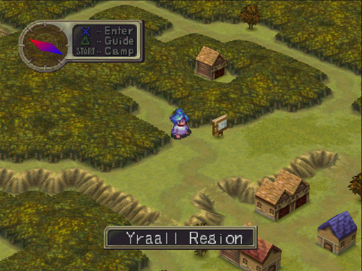
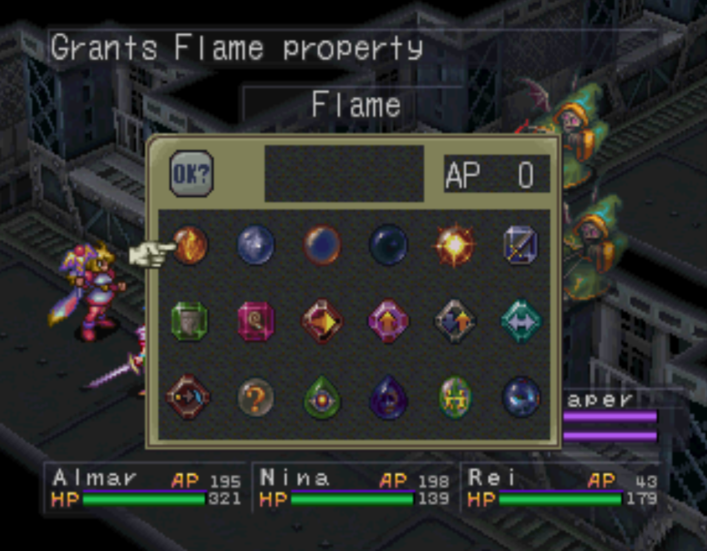

Breath of Fire III
Released in 1997 for the Playstation 1, Breath of Fire 3 avoided the path that many JRPGs took in that era, deciding not to focus on revolutionizing its own franchise and going for the sought after 3d visuals at the time, and instead perfect the formula that the other 2 games had estabilished. This game is the peak of everything Breath of Fire so far, with an engaging story, incredibly fun gameplay, charismatic and well developed characters, and a phenomenal soundtrack, even if you're not a fan of the franchise there's no way to miss with Breath of Fire 3.
Gameplay
Once again, the skeleton of the franchise remains, but with several additions. The entire game now uses the isometric view seen only in battles on earlier titles.Since the game doesn't have a top down view anymore, you can press L or R to rotate the camera and see what's in other directions, which is necessary to find many of the secret items, as the game hides them from certain camera angles.
While there are still field abilities, the world map itself changed, going away from the traditional JRPG base, as now you can't find enemies in it, and you just walk up to places you want to go, and when you enter them it loads a different area. You can also camp in the game, which functions essentially as a portable inn, allowing you to camp anywhere in the world map to recover HP and interact with your allies.
You can find several NPCs who can be tutors to any of your party members. They're called Masters, and each time a character levels up while under the "apprentice" of one of them, they gain stats depending on the Master you chose. It is important to note that this is not only positive, as most Masters will also decrease your stat growth in different areas, while increasing in others, so it's necessary to pay attention and balance it when needed. Besides that, after a few level ups, a Master can teach characters new skills.
As for in battle, there are a few additions. First off, your characters can learn enemies moves, akin to Final Fantasy's Red Mages, with the Examine button, where if an enemy uses a move while the character(s) who can learn that ability is examining it, it may acquire it, and it's also possible to pass that skill to another character by consuming a Skill Ink.
The formations in this game also work differently. You start with 3, and can gain 3 more with certain Masters. This time, they have different effects, like changing party character's stats, or things such as healing them every turn.
And the final mechanic is the Dragon Gene system. Here, Ryu's Dragon forms work differently, since you find several items called "genes" throughout the game. Each gene has its own properties, and by combining two or more in battle, Ryu can transform into several Dragon forms.
Story
The game starts in a Crystal mine, where a small dragon is found and manages to escape attacking several workers. He ends up in a forest, and transforms back into a child, Ryu. A Woren called Rei finds him, and takes care of him, introducing him to another kid, Teepo. It's revealed that they're thieves, but they manage to help the village in an errand, and start being respected.
Because of that, a man named Loki asks for their help, saying that the mayor Mcneil is corrupt. He wants them to steal his money and give them back to the people, which they agree to do, invading the mansion. They succeed, but the villagers get scared of what the mayor may do to them, and return the money. They find out that Mcneil was part of a criminal organization, and as a consequence the thieves house is burned down, and they're defeated and separated.
Ryu wakes up, and heads to Wyndia, but he ends up in Wyndia's jail. The princess, Nina, finds him, and the two escape together. Ryu continues his journey, looking for Teepo and Rei, and finding new allies. Eventually, they end up in the Colosseum, where Ryu fights and loses to a gargoyle-like creatuer named Garr, who joins them. Garr agrees to help them as long as they also accompany him to a temple in the east. When they get to the temple, Garr reveals the fate of the Brood, the dragon race: they were slaughtered by Garr's race at goddess Myria's request. He then fights Ryu, but is defeated, and there's a sudden timeskip.
Ryu ends up in the mines again, and Garr finds him, asking for forgiveness, and for Ryu to help him discover the truth about Myria. They find the other members, and eventually Rei, revealing that he was fighting the criminal organization that burned their house and defeated him all this time. They cross the ocean and get to a different continent, where they find the last dragon village, Dragnier, and find out about the battle between Ryu and Nina's ancestors against Myria, which occured in Breath of Fire 1. They then have to cross a massive desert, and get to the station where they'll find Myria.
After getting through the dungeon, they finally find Teepo, who got convinced by Myria to stay by her side, and transforms into a dragon, revealing himself to be one of the Brood just like Ryu. The party defeats him, and as he dies, he says that he just wanted to be with his family, Ryu and Rei. The party then finally gets to Myria, who then reveals that she exterminated the Brood for the same reason that she removed the world's advanced technology: to keep humanity from destroying themselves. Ryu then has a choice, either living with Myria and hiding his power like Teepo did, which results in a bad ending, or fight her, triggering the final boss.
After they defeat her, the station starts crumbling down, and Garr decides to stay behind to atone for his past sins, turning into stone in the process. The others manage to escape, and the game ends with Ryu, Nina, Rei and Momo watching over the desert hills.
Dragon Form
Here follows a list of all dragon genes, their properties, and where they can be found:
- Flame - Flame property | Automatically obtained in Wyndia's Basement
- Frost - Frost property | Foundin Maekyss Gorge
- Thunder - Electric property | Found in Rhapala Region
- Shadow - Shadow property | Automatically obtained after you defeat the Dragon Zombie boss
- Radiance - Holy property | Found at the Container Yard
- Force - no property | Found in The Plant
- Defender - Increases HP and Defense, but decreases Agility | Automatically obtained at Mt. Boumore
- Eldritch - Increases Intelligence, but decreases Power | Found in the Lighthouse
- Miracle - no property | Found in Mt. Zublo
- Gross - Increases HP, Power, Defense and Agility | Found at Tidal Caves
- Thorn - Increases other gene's characteristics | Found where Momo's rocket crashed
- Reverse - Inverts other gene's characteristics | Found near Mt. Boumore
- Mutant - Randomly uses 3 genes | Found at Steel Beach
- ??? - Used to unlock unique dragon forms | Found in the Urkan Region
- Trance - Used to unlock unique dragon forms | Found in Yggdrasil's cove
- Failure - Nearly worthless | Found at Colony
- Fusion - Used to unlock unique dragon forms | Automatically obtained after you defeat the Dragon Zombie boss
- Infinity - no property | Obtained after you defeat Jono at Dragnier